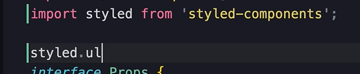
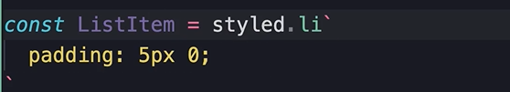

CSS-in-JS
The idea
This is a controversial technology. Some peope love it some people hate it.
But the idea is that we can write all the styles for a component next to it's definition in a Typescript or JS file.
The benefits
- Scoped styles
- All the CSS & JS/TS code in one place
- Easier to delete a component
- Easier to style based on props/state
Libraries
There are many many libraries that implement this concept, but some of the most popular ones are...
- Styled Components
- Emotion
- Polished
In this lesson we get a tour of Styled Components.
The Transition
We are starting with a regular css file...
And we are going to transition from this to the other approach called css-in-js.
Install Library
Open your terminal and run...
npm i styled-components
Import styled from styled components...

At the time of making this guide, we will get this err because the type definitions are missing.
For fix install this...
npm @types/styled-components
Creating styled components
Using this 'styled' object we can create styled components.
For example, we have 2 elements with classnames like this...
So, with styled components we no longer use className
Instead, we create a react component that has all the styles we need right here.
Start with the styled object, and call an html element...
Then add backticks...
Inside the backticks write all the styles you want for this element.
Maybe we have this...
It's return value is a react component with those styles applied.
So store it like this...
Using the Styled Component
Then instead of using a regular html element and className like this...
Use this...
Then we can do the same for our list item, so make this...
Then replace the html elememt li with this component.
Dynamic Styling
So we lost the logic for our list items. Let's remake it.
Create this prop...